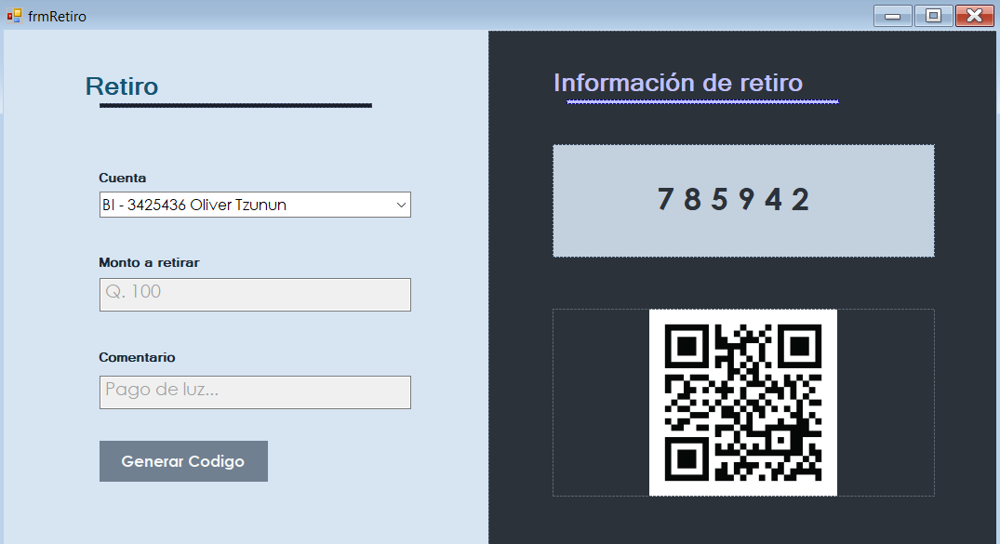

Formulario que se usa para depósitos dentro del sistema bancario, incluye las funciones de elegir la cuenta a debitar, la cuenta acreditar, el monto y también con la opción de mostrar un comentario.
Gestiona la generación y presentación de informes sobre el estado financiero de la institución. Esto incluye datos como activos, pasivos, ingresos, gastos, y otros indicadores clave de rendimiento. Estos informes son fundamentales para la toma de decisiones estratégicas y el cumplimiento normativo.
Gestiona todas las transacciones relacionadas con cheques, incluyendo emisión, depósito, cobro, y cancelación. Permite a los clientes realizar pagos utilizando cheques y a los bancos procesar y verificar dichas transacciones, garantizando la seguridad y la integridad de los fondos.
Administra las transacciones que implican ajustes en las cuentas de los clientes. Las notas de crédito se emiten para reembolsar fondos a los clientes, corregir errores o conceder créditos, mientras que las notas de débito se utilizan para cargar fondos a las cuentas de los clientes por diversas razones, como comisiones, intereses o cargos por servicios.

Una solicitud para adquirir una tarjeta de crédito o débito, donde se ingresan los datos personales del cliente como nombre completo, número de cuenta y de teléfono y DPI. También se debe de añadir ingresos y el tipo de tarjeta que desee con su marca.
Se ingresa el número de cuenta, el total a retirar y si se desea, algún comentario. También se muestra un código QR con la información del retiro.
